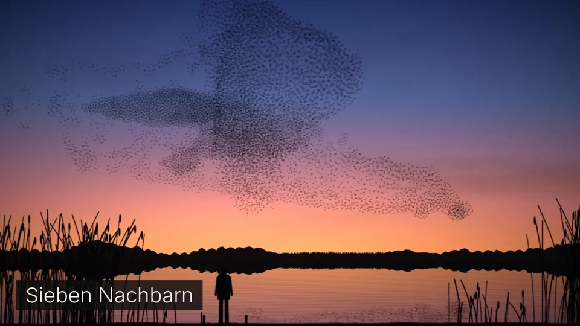

Gerechnet
Filme ohne Kamera.
Bild und Ton sind gerechnet. Die Musik ist aus den Simulationen, Automaten und Gleichungen gelesen oder für sie geschrieben.
frnkptrln & Claude · 2026

Sieben Nachbarn
Auf YouTube ↗Ein Naturfilm, in dem nichts gefilmt ist.

Alle 18 Filme
Playlist auf YouTube abspielen- Schritt haltenein Musikvideo über Menschen und Maschinen↗
- X/YOszilloskopmusik↗
- MorphogeneseTurings Muster werden Musik↗
- SchwarmStare in der Dämmerung, Klavier in E-Dur↗
- Lichtspielein Bauhaus-Farbenspiel↗
- KlangfigurenSand auf einer gestrichenen Platte↗
- Pendelwellefünfzehn Pendel, eine Minute↗
- NachtfahrtSynthwave durch den Regen↗
- Sechs FlockenThema mit sechs Variationen↗
- Textmoduseine Demo in 160 × 45 Zeichen↗
- GleichtaktGlühwürmchen finden einen Takt↗
- TinteTropfen sinken in Wasser↗
- Kaleidoskopdrei Spiegel, sechsundneunzig Scherben↗
- ResonanzJupiters Monde im Verhältnis 4 : 2 : 1↗
- Sieben Nachbarnein Naturfilm, in dem nichts gefilmt ist↗
- AmeiseLangtons Ameise baut eine Straße↗
- SiebzehnGauß' Siebzehneck mit Zirkel und Lineal↗
- MODE 13heine Demo in den Grenzen von 1993↗